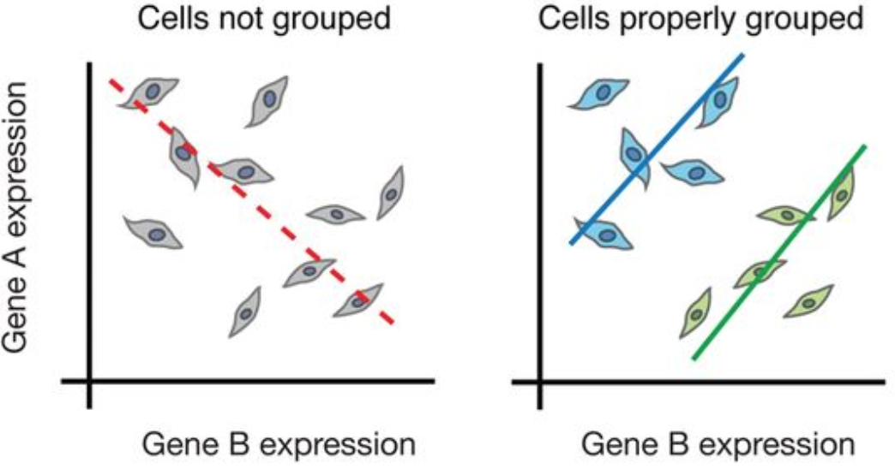
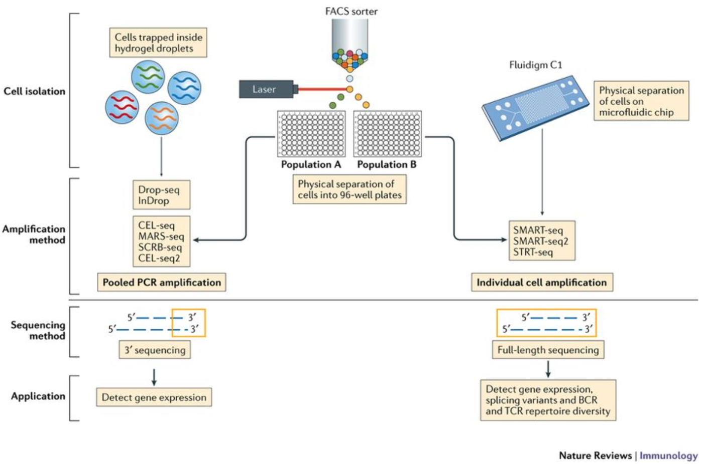
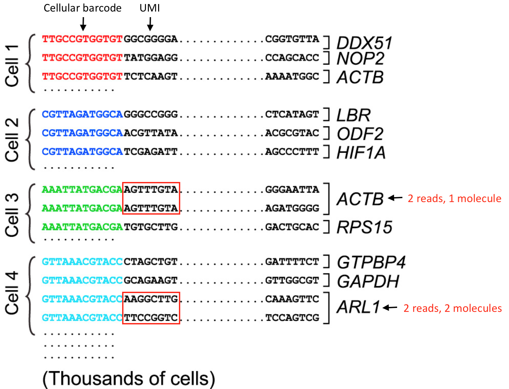
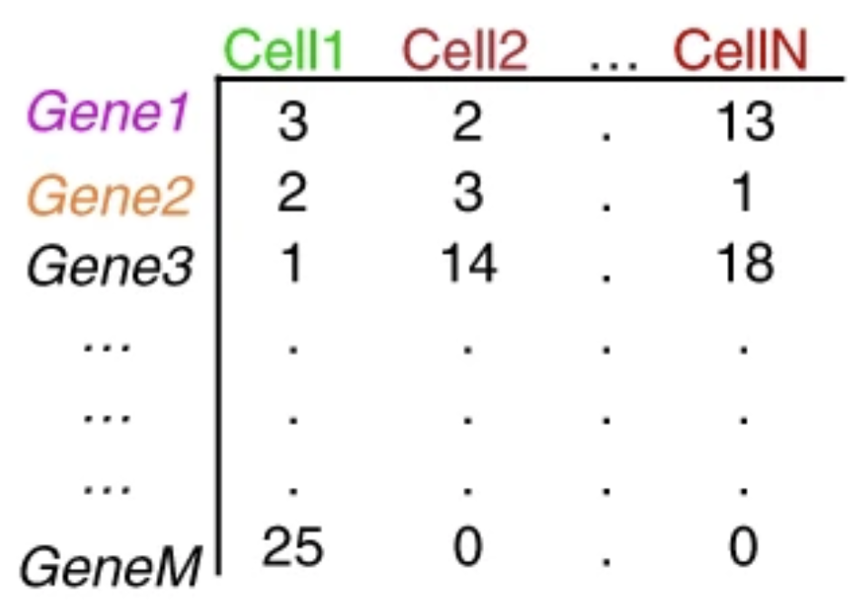
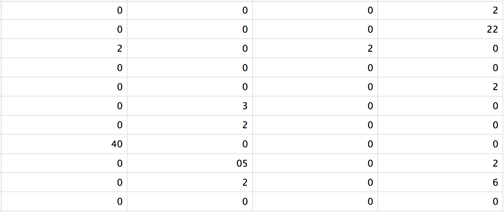
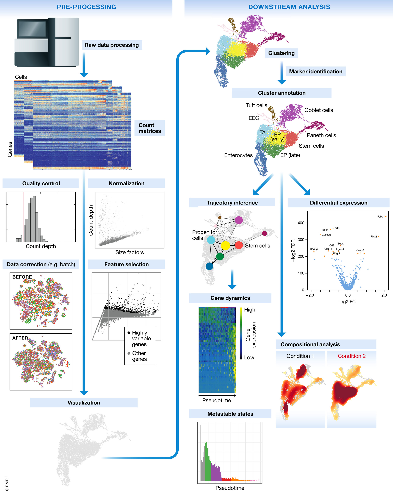
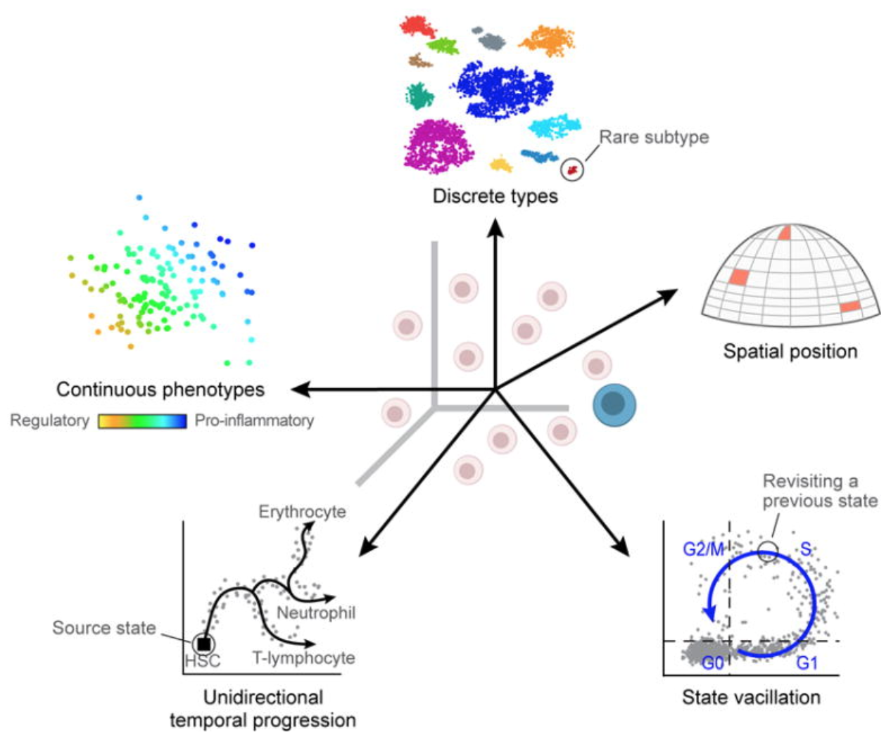

Introduction to Single-Cell RNA-seq
Why one cell at a time changes everything — concepts, technology, and the road ahead
Jubayer Hossain ![]()
By the end of this tutorial you will be able to:
- Explain why single-cell RNA-seq was invented and what bulk approaches cannot reveal
- Describe the key wet-lab steps that generate scRNA-seq data
- Understand what cell barcodes and UMIs are, and why they are indispensable
- Read and interpret a gene × cell count matrix
- Appreciate the dropout problem and why scRNA-seq data is inherently sparse
- Navigate the standard computational analysis pipeline at a conceptual level
- Know the core Python tools (the scverse ecosystem) used throughout this series
Estimated reading time: 20–25 minutes Prerequisites: None — this is the starting point
1. The Averaging Problem: Why Single-Cell?
In 2011, a study of colorectal cancer tumours used bulk RNA-seq and concluded that the tumour immune microenvironment was immunosuppressed. A decade later, single-cell analysis of the same tumour type revealed something far more complex: within what bulk analysis called “immunosuppressed”, there were activated cytotoxic T cells trying to kill, Tregs blocking them, exhausted CD8+ cells giving up, and M2-polarised macrophages fuelling the tumour — all co-existing in the same biopsy [@Zhangetal2020]. Bulk sequencing had averaged all of this into silence.
This is the core problem. When you take a tissue and homogenise it for bulk RNA-seq, you are computing a weighted average of the transcriptomes of every cell type present. The signal you measure is not the signal of any real cell — it is an artefact of mixture proportions.

The consequence is profound. Rare cell types that constitute 1–2% of a tissue are invisible. Transitional states between mature cell types are blurred away. A stimulus that activates 30% of T cells while leaving 70% unaffected looks like a mild, uniform response. Tumour subclones with distinct mutation profiles are averaged together.
Single-cell RNA sequencing (scRNA-seq) solves this by measuring the transcriptome of each cell individually — turning a single averaged measurement into a data matrix with one row per cell, capturing the true diversity of biological states.
scRNA-seq is not always the right choice. Bulk RNA-seq is cheaper, more sensitive (detects low-abundance transcripts reliably), and better for large-cohort studies. Use scRNA-seq when your biological question is about cell type composition, rare populations, cellular heterogeneity, or cell state transitions. For straightforward differential expression across conditions with known cell types, bulk RNA-seq remains powerful and cost-effective.
2. A Decade That Changed Biology
The idea of sequencing a single cell’s transcriptome was demonstrated as early as 2009 by Tang et al., who sequenced the transcriptome of a single mouse oocyte using a custom amplification protocol [@Tangetal2009]. The data were sparse and the throughput was one cell at a time — but the proof of concept was established.
The real revolution came in 2015, when two groups published back-to-back in the same issue of Cell:
Macosko et al., 2015 — Drop-seq [@Macoskoetal2015] Encapsulated single cells in nanolitre-scale aqueous droplets alongside DNA-barcoded beads in an oil stream. Profiled 44,808 retinal cells from the mouse retina in a single experiment, discovering 39 transcriptionally distinct cell populations. Cost per cell dropped to $0.06 — orders of magnitude cheaper than any previous method.
Klein et al., 2015 — inDrop [@Kleinetal2015] Published simultaneously, independently arriving at a nearly identical droplet-based solution. Profiled mouse embryonic stem cells undergoing differentiation, capturing continuous transcriptional trajectories invisible to bulk methods.
These papers established the droplet microfluidics paradigm that dominates the field today.
By 2017, 10x Genomics had commercialised droplet capture into the Chromium platform, making scRNA-seq accessible to any lab with $50,000 and an Illumina sequencer. Zheng et al. demonstrated profiling of 1.3 million mouse brain cells in a single run [@Zhengetal2017]. That same year, the Human Cell Atlas consortium was announced — an international effort to map every cell type in the human body [@HCA2017].
The pace accelerated. By 2023, single-cell atlases existed for the entire human immune system, the developing brain, the lung across COVID-19 severity, and dozens of tumour types. What Tang et al. did painstakingly for one cell in 2009, researchers now do for a million cells before lunch.
3. Inside the Experiment: From Tissue to Library
Understanding the wet-lab pipeline is essential for interpreting the data computationally. Every artefact you will encounter — batch effects, dropouts, doublets — has a specific biological or technical origin in the experiment.
3.1 Starting Material: The Single-Cell Suspension
scRNA-seq requires a single-cell suspension — individual cells floating freely in buffer, not clumped or embedded in tissue. Achieving this from solid tissues requires enzymatic and/or mechanical dissociation, which introduces its own artefacts:
- Stress response genes (FOS, JUN, HSPA1A) are upregulated during dissociation, a phenomenon well-documented in brain tissue [@vande2019]. This can create spurious “activation” clusters.
- Fragile cell types (neurons, adipocytes) are preferentially lost during dissociation, biasing the recovered cell composition.
- Time on ice and cold vs warm dissociation protocols produce measurably different transcriptomes.
Blood (PBMCs) and bone marrow are fortunate exceptions — cells already exist in suspension and require minimal processing. This is why PBMC datasets dominate the benchmarking literature.
3.2 Capturing Individual Cells: Three Strategies
Modern platforms split into three broad families based on how they physically isolate single cells:

Droplet-based methods (10x Chromium, Drop-seq, inDrop) are by far the most widely used. Cells and barcoded beads are co-encapsulated in oil droplets at nanolitre scale. Throughput is 500–10,000 cells per run, cost per cell is very low (~$0.10–0.50), but only the 3′ or 5′ end of transcripts is captured.
Plate-based methods (Smart-seq2, Smart-seq3) sort individual cells into wells of a 96- or 384-well plate. Each cell is processed separately. Throughput is low (96–384 cells per run), cost per cell is high, but full-length transcript coverage enables detection of splice variants, allele-specific expression, and V(D)J recombination.
Split-pool barcoding (SPLiT-seq, SHARE-seq) barcodes cells in situ through multiple rounds of split-pool ligation — no physical separation required. Cells are fixed, split across many wells, ligated with a unique barcode, pooled, then split again. Theoretically unlimited throughput.
For this tutorial series, we focus on the 10x Chromium platform because it generates the majority of public datasets and is the current default in most research settings.
3.3 Inside the 10x Chromium: How a GEM Works
The key innovation of the 10x Chromium is the Gel Bead in Emulsion (GEM). Here is what happens in the fraction of a second when a GEM forms:
- A cell and a gel bead are co-encapsulated in an oil droplet
- The gel bead dissolves, releasing millions of oligonucleotides, each carrying:
- An Illumina sequencing adapter
- A 16 bp cell barcode (same sequence on all oligos from one bead — this is the cell’s identity tag)
- A 12 bp Unique Molecular Identifier (UMI) (random sequence — unique per molecule)
- A poly-dT anchor that captures polyadenylated mRNA
- mRNA molecules in the droplet hybridise to the poly-dT
- Reverse transcriptase converts them to cDNA with the barcode and UMI incorporated
- Droplets are broken, cDNA from all cells is pooled, PCR-amplified, and sequenced together
The entire complexity of identifying which read came from which cell is handled downstream by software using the cell barcode sequence.
4. Barcodes and UMIs: The Digital Identity of Each Cell
The barcode-UMI system is one of the most elegant engineering decisions in modern genomics. Understanding it deeply will prevent many common analysis mistakes.

TTGCCGTGGTGT) identifying the source cell, and a UMI (in red, e.g. GCGGGG) identifying the individual mRNA molecule captured. Cell 3 has two reads mapping to ACTB but they share the same UMI — they are PCR duplicates of one molecule. Cell 4 has two reads mapping to ARL1 with different UMIs — these are two distinct molecules. Adapted from HBC Training Materials.4.1 The Cell Barcode
Every oligo on a given bead carries an identical cell barcode — a 16 bp sequence from a whitelist of ~6,000 to 8 million valid barcodes (depending on the kit version). After sequencing, software assigns each read to a cell by matching its barcode to this whitelist, allowing up to 1 mismatched base (hamming distance correction).
The number of unique cell barcodes detected — and the shape of the barcode rank plot — is how you assess how many real cells were captured (more on this in the QC tutorial).
4.2 The UMI and Why It Exists
PCR amplification is necessary to generate enough material for sequencing, but it distorts count estimates. A highly expressed gene might be amplified 1,000-fold while a lowly expressed gene is amplified only 10-fold — and this amplification efficiency varies between molecules. Without correction, you would be comparing amplification noise, not biology.
The UMI solves this: each mRNA molecule captured in a droplet receives a unique 12 bp random tag before PCR. After PCR, all copies of the same original molecule carry the same barcode+UMI combination. When counting expression, you count unique UMIs, not reads. Two reads with the same cell barcode, same gene, and same UMI are collapsed into a single count of 1.
The transition from read counts to UMI counts was critical for making scRNA-seq data quantitative. Earlier methods without UMIs (e.g., early Smart-seq versions) counted reads, making normalization and comparison across cells unreliable. The introduction of UMIs in CEL-seq (Hashimshony et al., 2012) and their adoption across all major platforms is a key reason why scRNA-seq data became tractable.
4.3 The Cell Ranger / STARsolo Pipeline
The journey from raw FASTQ reads to a count matrix involves several filtering steps, each with a specific biological rationale:

At each step, reads are discarded for a specific reason — invalid barcode, unmapped sequence, multimapping, low base quality. The survivors — confidently mapped, uniquely barcoded reads with valid UMIs — are collapsed into the final count matrix.
The equivalent open-source tools are STARsolo (integrated into the STAR aligner) and Alevin (part of Salmon), which produce identical outputs while avoiding the Cell Ranger licence requirement.
5. The Count Matrix: Your Data Structure
The output of preprocessing is a gene × cell count matrix — the fundamental data object you will work with throughout this series.


A typical 10x Chromium experiment profiling human PBMCs might produce:
| Quantity | Typical value |
|---|---|
| Cells captured | 3,000 – 10,000 |
| Genes in genome | ~33,000 (human) |
| Genes detected per cell | 1,500 – 4,000 |
| Median UMIs per cell | 2,000 – 8,000 |
| Matrix sparsity | 90 – 95% zeros |
| Raw matrix size (dense) | ~5 GB |
| Raw matrix size (sparse) | ~50 MB |
5.1 The Dropout Problem
A gene that is expressed in a cell may still appear as zero in the count matrix. This happens because the capture efficiency of the 10x platform is approximately 10–30% — for every 10 mRNA molecules present in a cell, only 1–3 are captured, reverse-transcribed, and sequenced. Lowly expressed genes — those with only 1–5 copies per cell — frequently produce zero counts even when genuinely expressed. This is called dropout.
Dropout has important consequences: - You cannot distinguish a true biological zero (gene not expressed) from a technical zero (gene expressed but not captured) - Normalisation must account for the fact that total counts per cell reflect both biology and capture efficiency - Imputation methods (MAGIC, scVI) attempt to statistically recover dropout values, though this remains controversial
A common mistake is treating all zeros as “not expressed”. In reality, a zero in a single cell tells you very little. The signal in scRNA-seq lives in patterns across many cells — not in individual entries. Methods that rely on single-cell level values (e.g. naive correlation between genes) are severely distorted by sparsity. Always think at the population level.
6. The Computational Pipeline: A Map of What’s Ahead
The journey from a raw count matrix to biological insight spans several well-defined steps. The figure below shows the complete modern analysis pipeline as described by Luecken & Theis in their landmark methods review [@LueckenTheis2019]:

Here is a concise map of each stage and where it lives in this series:
| Step | What it does | Tutorial |
|---|---|---|
| QC | Remove dead cells, doublets, low-quality barcodes | #4 |
| Normalisation | Correct for library size differences | #6 |
| Feature selection | Focus on highly variable genes | #6 |
| Dimensionality reduction | PCA → UMAP, compress 20,000 genes to 2D | #7–8 |
| Clustering | Group cells by transcriptional similarity | #9 |
| Annotation | Assign cell type labels to clusters | #10 |
| Differential expression | Compare gene programs between groups | Later |
| Trajectory inference | Model pseudotime, differentiation paths | Later |
| Compositional analysis | Compare cell type abundances across conditions | Later |
A simplified view of the core pipeline:

7. What Single-Cell Resolution Actually Reveals
The reason scRNA-seq has become ubiquitous is not just technical capability — it is because the biology being revealed was genuinely not accessible before. There are at least five categories of biological variation that only single-cell resolution can capture:

Let us look at three landmark studies that exemplify what this resolution makes possible:
Disease-Associated Microglia in Alzheimer’s Disease
Keren-Shaul et al. (2017) profiled microglia from the brains of Alzheimer’s mouse models at single-cell resolution. Within what was previously considered a homogeneous “activated microglia” population, they discovered a transcriptionally distinct subpopulation — disease-associated microglia (DAM) — defined by upregulation of Trem2, Apoe, and Lpl, and downregulation of homeostatic genes P2ry12 and Cx3cr1 [@KerenShaul2017]. This TREM2-dependent transition had been completely invisible to bulk approaches because DAMs constitute a minority of total microglia. The discovery opened an entire therapeutic target space for Alzheimer’s disease.
Resolving T Cell Exhaustion in Melanoma
Tirosh et al. (2016) performed scRNA-seq on 4,645 cells from 19 melanoma tumours, resolving tumour cells, T cells, B cells, macrophages, and cancer-associated fibroblasts within each biopsy [@Tirosh2016Science]. They discovered that intratumoural T cells showed a continuous spectrum from functional to exhausted states — a trajectory that bulk T cell gene signatures had conflated into a single “dysfunction” category. They identified a cell-cycle-related gene programme in malignant cells that explained inter-tumour heterogeneity. This paper is still cited as a template for single-cell TME analysis.
Multiplexing Samples to Eliminate Batch Effects
A practical landmark: Kang et al. (2018) introduced cell multiplexing using natural genetic variation. By pooling PBMCs from multiple donors into a single 10x run and then demultiplexing computationally by SNP profile (using the demuxlet tool), they could capture multiple samples simultaneously — halving costs and eliminating batch effects between samples within the same study [@Kang2018NatBiotech].

This technique — or its modern relatives (hashtag oligos, MULTI-seq, CMO labelling) — is now standard practice in clinical scRNA-seq studies with multiple patients.
8. The Python Ecosystem: Your Toolkit
All analysis in this series uses the scverse — a coordinated ecosystem of Python packages that share a common data structure (AnnData) and design philosophy.
| Package | Role | Key operations |
|---|---|---|
| anndata | Data structure | Store and manipulate annotated data matrices |
| scanpy | Core analysis | QC, normalisation, PCA, UMAP, clustering, DE |
| scvi-tools | Deep generative models | Probabilistic normalisation, integration, doublet detection |
| cellrank | Trajectory inference | Cell fate prediction using RNA velocity and pseudotime |
| squidpy | Spatial transcriptomics | Spatial neighbourhood graphs, image analysis |
| muon | Multi-modal data | CITE-seq, ATAC+RNA, multi-omics integration |
The central object is the AnnData (Annotated Data) structure — a matrix-centric data container that keeps your count matrix, cell metadata, gene metadata, dimensionality reductions, and analysis results together in a single object. Tutorial #3 is dedicated entirely to understanding AnnData.
import scanpy as sc
# This one line loads a count matrix and wraps it in AnnData
adata = sc.read_10x_mtx("filtered_feature_bc_matrix/")
# You now have:
adata # AnnData object: 8,412 cells × 33,538 genes
adata.X # The count matrix (sparse)
adata.obs # Cell metadata (DataFrame)
adata.var # Gene metadata (DataFrame)If this looks unfamiliar, don’t worry — we dedicate an entire tutorial to the AnnData structure before writing a single line of analysis code.
9. The Dataset We Will Use Throughout This Series
All tutorials in this series use a real clinical scRNA-seq dataset from a published study of human peripheral blood mononuclear cells (PBMCs) profiled across three conditions:
- Control (4 samples) — Healthy or untreated donors
- Pre-treatment (4 samples) — Patients before intervention
- Post-treatment (4 samples) — Same patients after intervention
The dataset consists of 12 count matrices stored as compressed CSV files (.csv.gz), with cells as columns and genes as rows. In total, you are working with tens of thousands of real human immune cells across a treatment time course — the kind of data that generates publishable biological findings.
Clinical scRNA-seq datasets with paired pre/post samples are among the most powerful study designs in the field, because you can:
- Identify which cell types expand or contract in response to treatment
- Find which gene programmes are activated or suppressed within each cell type
- Detect cell type-specific treatment responders vs non-responders
This is the exact type of analysis driving precision medicine applications today.
We will not load this data until Tutorial #3 (The AnnData Object Explained). For now, simply know that every figure you will produce — every UMAP, every heatmap, every volcano plot — will come from these 12 real human samples.
10. Summary
Single-cell RNA-seq is not just a more expensive version of bulk RNA-seq — it answers questions that bulk approaches are structurally incapable of addressing. The core insight is that biological tissues are heterogeneous mixtures, and averaging across that heterogeneity destroys the signal you care about.
The technology achieves single-cell resolution through droplet microfluidics (primarily) — co-encapsulating a cell and a barcoded bead, reverse-transcribing the cell’s mRNA with a unique cell barcode and per-molecule UMI, then sequencing millions of tagged cDNA fragments in a single sequencer run.
The output — a sparse gene × cell count matrix — is the starting point for all computational analysis: QC, normalisation, dimensionality reduction, clustering, cell type annotation, and downstream biological interpretation.
The Python scverse ecosystem — centred on scanpy and anndata — provides a coherent, well-maintained framework for every step of this pipeline. In the next tutorial, you will set up your environment and install everything you need.
Before moving on, make sure you can explain:
What’s Next
Tutorial #2 — Setting Up Your Python Environment Install scanpy, anndata, and the full scverse stack. Create a reproducible conda environment. Verify your installation with a Hello World single-cell analysis.
References
Tang F et al. (2009). mRNA-Seq whole-transcriptome analysis of a single cell. Nature Methods, 6, 377–382. DOI: 10.1038/nmeth.1315
Macosko EZ et al. (2015). Highly parallel genome-wide expression profiling of individual cells using nanoliter droplets. Cell, 161(5), 1202–1214. DOI: 10.1016/j.cell.2015.05.002
Klein AM et al. (2015). Droplet barcoding for single-cell transcriptomics applied to embryonic stem cells. Cell, 161(5), 1187–1201. DOI: 10.1016/j.cell.2015.04.044
Zheng GXY et al. (2017). Massively parallel digital transcriptional profiling of single cells. Nature Communications, 8, 14049. DOI: 10.1038/ncomms14049
Regev A et al. (2017). The Human Cell Atlas. eLife, 6, e27041. DOI: 10.7554/eLife.27041
Tirosh I et al. (2016). Dissecting the multicellular ecosystem of metastatic melanoma by single-cell RNA-seq. Science, 352(6282), 189–196. DOI: 10.1126/science.aad0501
Keren-Shaul H et al. (2017). A unique microglia type associated with restricting development of Alzheimer’s disease. Cell, 169(7), 1276–1290. DOI: 10.1016/j.cell.2017.05.018
Kang HM et al. (2018). Multiplexed droplet single-cell RNA-sequencing using natural genetic variation. Nature Biotechnology, 36, 89–94. DOI: 10.1038/nbt.4042
Zhang L et al. (2020). Lineage tracking reveals dynamic relationships of T cells in colorectal cancer. Nature, 564, 268–272. DOI: 10.1038/s41586-018-0694-x
Luecken MD & Theis FJ (2019). Current best practices in single-cell RNA-seq analysis: a tutorial. Molecular Systems Biology, 15(6), e8746. DOI: 10.15252/msb.20188746
Papalexi E & Satija R (2018). Single-cell RNA sequencing to explore immune cell heterogeneity. Nature Reviews Immunology, 18, 35–45. DOI: 10.1038/nri.2017.76
van den Brink SC et al. (2017). Single-cell sequencing reveals dissociation-induced gene expression in tissue subpopulations. Nature Methods, 14, 935–936. DOI: 10.1038/nmeth.4437